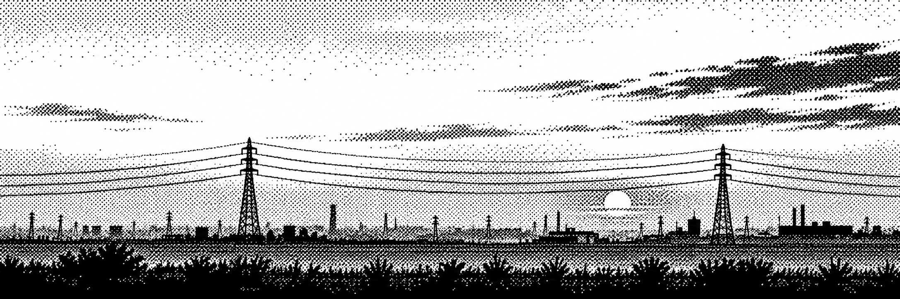

John Kim
I'm a CS student at Georgia Tech. I like distributed systems and infrastructure, and until May I taught data structures to a lot of people.
01 Work & experience
Previous
-
Software Engineer Intern, Databricks — May 2026–August 2026
Worked on the Code & CI team on release infrastructure. -
Teaching Assistant, Georgia Tech (CS 1332) — Jan 2025–May 2026
Hosted office hours, gave lecture recitations, and graded projects & homeworks. -
Software Development Engineer Intern, Amazon — May–Aug 2025
Worked on the pipeline that enriches $50M/year of transaction data (AWS Lambda). Got tax linkage to 99.99% accuracy at 12 transactions/second with Athena and Glue, then built the React views that surface those tax insights across 10M+ transactions. Wrote about it here.
02 Selected projects
-
Architect Design AI
A whiteboard for system design. You draw the architecture, AI grades it. -
Data Structures Visualization Tool
Animates data structures and algorithms step by step. Nearly every CS 1332 student at Georgia Tech uses it. Plain JavaScript and Canvas — no framework. -
Boovie
Turns a book PDF into a 30-second movie trailer using Gemini, Imagen, and RunwayML. We got to present it to Google's AI leadership.